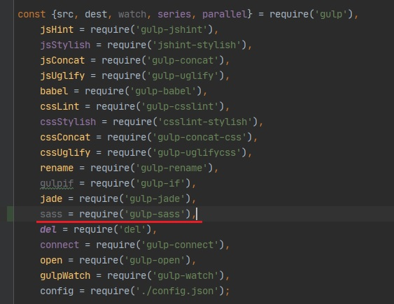
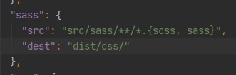
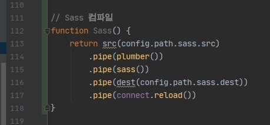
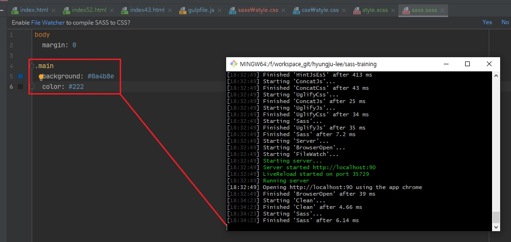
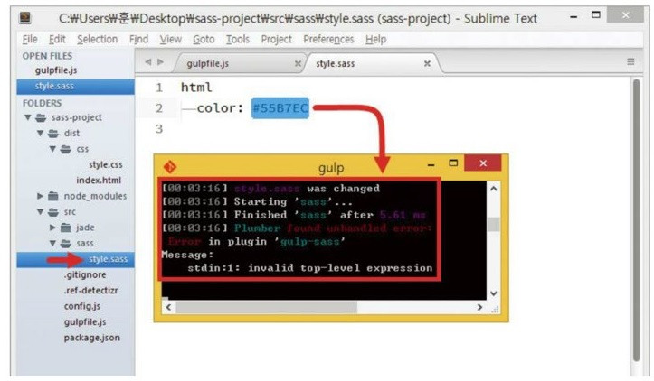

gulp-sass 모듈 호출 및 sass 업무 등록하기
- gulp-sass 모듈 호출 및 sass 업무 등록하기
-
모듈 설치가 끝났으면 gulpfile.js 파일을 엽니다.
아래의 빨강색 밑줄을 참고하여 gulp-sass 모듈을 호출하는 코드를 변수 묶음에 추가합니다.

config.js 환경 설정 파일을 열고, template 속성 아래쪽에 콤마(,)로 구분합니다.

다시 gulpfile.js 파일로 돌아와 아래를 참고하여 Gulp 업무 sass를 등록합니다.
sass 업무는 config.js 파일에 설정한 sass 객체에서 src 속성 값의 모든 Sass 파일을 가져와
변환하기 전에 오류가 발생해도 멈추지 않게 합니다.

다음을 참고하여 관찰 업무에 Sass를 관찰하는 내용을 추가합니다.
모든 Sass 파일의 변화를 지속적으로 관찰하여 내용을 수정해서 저장하면 sass 업무를 시작하라는 코드입니다.
위 처럼 코드를 추가했다면 확장자가 scss일 때는 아무런 문제없이 CSS 파일을 생성합니다.
하지만 확장자가 sass라면 다음처럼 오류가 발생합니다.

아무리 .sass 확장자 파일을 수정하여도 반응이 없습니다.
확장자가 .scss 파일은 수정하면 반응합니다.
책에서는 다음과 같은 오류가 발생한다고 쓰여있습니다.

이런 오류가 발생하는 이유는 공식적으로 gulp-sass는 scss 확장자 문법만 지원하기 때문이라고 합니다.
- Sass 파일일 때 발생하는 오류는 어떻게 해결하나요?
-
이 문제는 다음 그림처럼 sass() 함수 내부에 {sourceComments: 'normal'} 값을 입력하면
해결됩니다.
이 해결책은 gulp-sass 설치 버전이 1.2.4 일 때 사용할 수 있습니다.
1.3.x 버전일 때는 문제가 해결되지 않습니다.
현재는 이로부터 5년이 지나 gulp-sass 버전이 4.0.2입니다. 위 속성(sourceComments)은 true 또는 false만 입력할 수 있는
옵션으로 바뀌었습니다. 그리고 그 역할은 sass파일을 컴파일 해주는 역할이 아니라, 해당 속성들이 어떤 scss 파일에 있었는지를
알 수 있게 해주는 주석을 달아줍니다.
즉, sass 파일은 쓰지 않는 걸로....